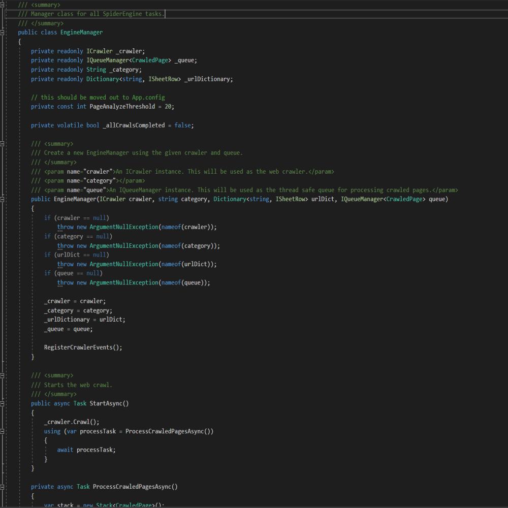

On3 Spider
Description
The On3 Web Spider was a freelance project made for a colleague. The goal was to create a web spider to crawl Division II collegiate athletics sites searching for statistics on the college athletes in their programs. The spider expected an Excel sheet containing sites to crawl as input, and would display all athlete information it found in tabular form. For web crawling I used the Abot X library.
At first this project was meant to be a Windows application built in C#, but it later morphed into an ASP.NET MVC site with the web crawler as the backend. This project was delivered as a minimum viable product and was used as a starting point for the codebase of my colleague's startup.
Stack
- ASP.NET MVC | C#
- jQuery
- Razor
- Bootstrap